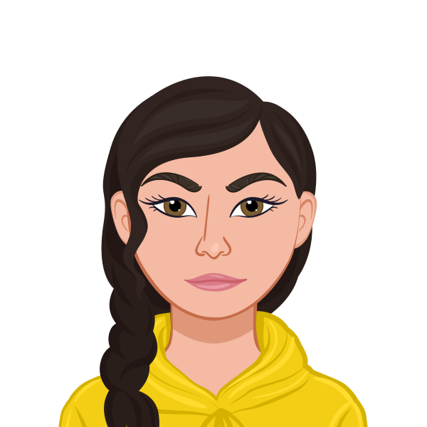

🌸 Welcome!
I'm Elli, a UX Researcher and aspiring
Data
Analyst based in Berlin.
Discover my journey and work ↓

Featured Projects

Continuous Discovery
This project was about lalalalalala dasdasdasdasdasdasdas dasdasdasdasdasdasdasdasdasdad asdasdasda
View Case Study
End2End Journey Research
This project was about lalalalalala dasdasdasdasdasdasdas dasdasdasdasdasdasdasdasdasdad asdasdasda
View Case Study
Multimethod Research
This project was about lalalalalala dasdasdasdasdasdasdas dasdasdasdasdasdasdasdasdasdad asdasdasda
View Case Study